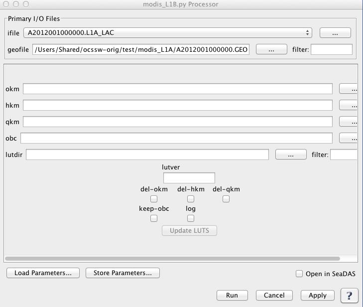

| modis_L1B.py | |
Creates a MODIS Level 1B file from an input Level 0 file.
Location
Details
Command Line Usage
Tools -> OCSSW Processing -> modis_L1B.py
<modis_L1B.py creates a MODIS Level 1B file from an input Level 0 file.
|  |
| UI Element Name | Type | Description | Required/Optional | Default Value |
| ifile | text | MODIS_L0_file name | Required | |
| geofile | Text Field | L1A GEO file name | Optional | if GEOFILE is not provided, assumed to be basename of L1AFILE + '.GEO' |
| okm | text | Output MODIS L1B 1KM HDF filename | Optional | Derived from the ifile |
| hkm | text | Output MODIS L1B HKM HDF filename | Optional | Derived from the ifile |
| qkm | text | Output MODIS L1B QKM HDF filename | Optional | Derived from the ifile |
| obc | text | Output MODIS L1B OBC HDF filename | Optional | Derived from the ifile |
| lutver | text | L1B LUT version number | Optional | |
| lutdir | text | Path of directory containing LUT files | Optional | |
| del-okm | boolean | Delete 1km resolution L1B file | Optional | false |
| del-hkm | boolean | Delete 500m resolution L1B file | Optional | false |
| del-qkm | boolean | Delete 250m resolution L1B file | Optional | false |
| keep_obc | boolean | Save onboard calibration file | Optional | false |
| log | boolean | Save processing log file(s) | Optional | false |
| UI Element Name | Type | Description |
| Browser Button | Button | Selects infile/ofile |
| Load Parameters ... | Button | Reads in previously saved parameters and populates the fields in GUI. |
| Save Parameters ... | Button | Saves the current arguments in GUI in a file. |
| Run | Button | Executes the modis_L1B.py command with arguments provided in the UI. |
| Cancel | Button | Closes current processor GUI. |
| Apply | Button | Makes current arguments effective. |
| Open in SeaDAS | Checkbox | If selected, the ofile will be added to the open products list right after its generation. |
| ? | Button | Displays the help content of the current command. |
Usage:
modis_L1B.py [OPTIONS] L1AFILE [GEOFILE]
if GEOFILE is not provided, assumed to be basename of L1AFILE + '.GEO'
or
modis_L1B.py --parfile=parameter_file [OPTIONS]
Options:
--version show program's version number and exit
-h, --help show this help message and exit
-p PARFILE, --parfile=PARFILE
Parameter file containing program inputs
-o 1KMFILE, --okm=1KMFILE
Output MODIS L1B 1KM HDF filename
-k HKMFILE, --hkm=HKMFILE
Output MODIS L1B HKM HDF filename
-q QKMFILE, --qkm=QKMFILE
Output MODIS L1B QKM HDF filename
-c OBCFILE, --obc=OBCFILE
Output MODIS L1B OBC HDF filename
-l LUTVER, --lutver=LUTVER
L1B LUT version number
-d LUTDIR, --lutdir=LUTDIR
Path of directory containing LUT files
-x, --del-okm Delete 1km resolution L1B file
-y, --del-hkm Delete 500m resolution L1B file
-z, --del-qkm Delete 250m resolution L1B file
--keep-obc Save onboard calibration file
-v, --verbose print status messages
--log Save processing log file(s)